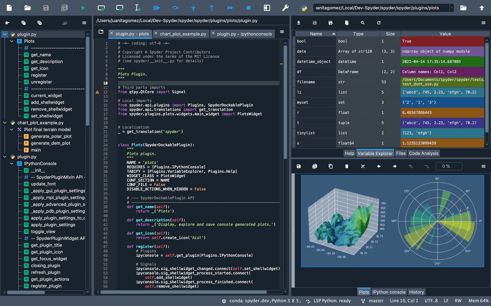
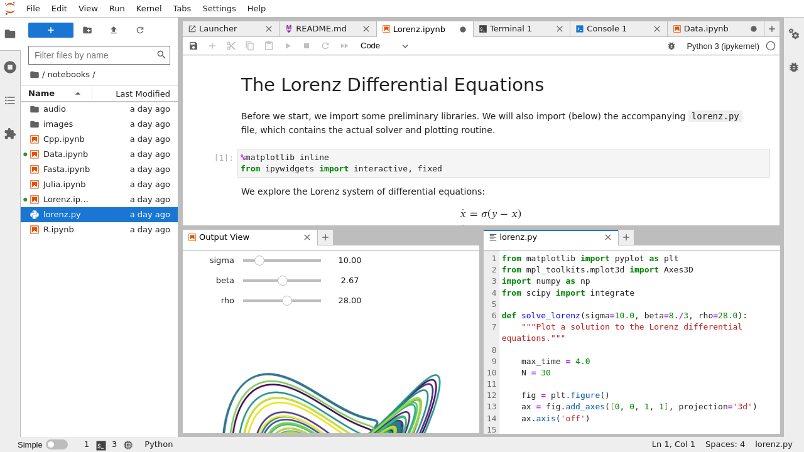

# First way
import numpy
numpy.sqrt(3) # return the squared root of 3
# Second way
import numpy as np
np.sqrt(3) # return the squared root of 3
# Third way
from numpy import*
sqrt(3) # return the squared root of 3
# Fourth way
from numpy import sqrt
sqrt(3)1 Introduction to Python
1.1 Introduction
Python is a general purpose high-level programming language conceived in 1989 by Dutch programmer Guido van Rossum. In a blog post, Guido discuss how Python has evolved over time. In this chapter, we explain how to install Python using the open-source Anaconda Distribution, and describe Python shells, Integrated Development Environments (IDEs), and Jupyter Notebooks for using the Python shell. We then show how to import modules and introduce key modules required for econometrics. Finally, we show how to perform variable assignments and introduce built-in data types.
\[ \DeclareMathOperator{\cov}{cov} \DeclareMathOperator{\corr}{corr} \DeclareMathOperator{\var}{var} \DeclareMathOperator{\SE}{SE} \DeclareMathOperator{\E}{E} \DeclareMathOperator{\A}{\boldsymbol{A}} \DeclareMathOperator{\x}{\boldsymbol{x}} \DeclareMathOperator{\sgn}{sgn} \DeclareMathOperator{\argmin}{argmin} \newcommand{\tr}{\text{tr}} \newcommand{\bs}{\boldsymbol} \newcommand{\mb}{\mathbb} \]
1.2 Installing Python
The official Python home page is: https://www.python.org/. We recommend to install the Python scientific stack through Anaconda. Anaconda, a free product of Anaconda Inc. (formerly Continuum Analytics Inc.), is a virtually complete scientific stack for Python. The open-source Anaconda Distribution is the easiest way to perform Python on Linux, Windows, and MacOS. To install Anaconda, visit Anaconda Distribution web page at https://www.anaconda.com/download.
Anaconda comes with the core Python interpreter (Python shell) and most of the modules required for econometric analysis. It also provides Anaconda Navigator, which is a desktop graphical user interface (GUI) that allows you to launch applications, and manage conda packages and environments. Anaconda Navigator is shown in Figure 1.1.
Python comes with a Python shell (or Python Interpreter) that executes Python commands. To start the Python shell, open the Anaconda Prompt and type start python. An enhanced version of the Python shell is IPython, which can be launched by typing start ipython in the Anaconda Prompt. Another option is Jupyter QtConsole, a shell with features similar to IPython. To launch QtConsole, type start jupyter qtconsole in the Anaconda Prompt.
1.3 Integrated Development Environments and Notebooks
In practice, Python is typically used through integrated development environments (IDEs) and notebooks rather than the Python Shell. With Anaconda Navigator, you can launch Spyder, Jupyter Notebook, and JupyterLab.
Spyder is an IDE specifically designed for Python, featuring an in-built Python console along with advanced editing, analysis, and debugging tools. Figure 1.2 shows Spyder’s interface.

Jupyter Notebook is a browser-based interactive tool that allows for live code, equations, visualizations, and narrative text. JupyterLab is the next-generation user interface that includes notebooks and offers IDE-like features. Figure 1.3 shows the JupyterLab interface.

1.4 Modules
Anaconda includes most of the modules needed for econometric analysis. One of the installed modules is NumPy. To access the square root function in NumPy, we can use one of the following ways:
In the above code chunk, the hash mark # is used to add comments to the code chunk. The text following the mark is ignored by the Python shell. In the third way, from numpy import* makes all functions in numpy available. In the fourth way, from numpy import sqrt only makes the sqrt function available. We recommend using the second way, import numpy as np, and accessing the square root function with np.sqrt.
In Python, attributes of objects are accessed using dot notation. The term following the dot is called an attribute of the object. An attribute can contain auxiliary information related to the object or it can act like functions, called methods (Sheppard (2021)). In the example np.sqrt(3), sqrt is a method (or function) of the np object.
We list some important modules that are required for econometric analysis below:
numpy: This core package for numerical computation provides array and matrix data types, as well as functions for linear algebra and random number generation. For more information, see https://numpy.org/.scipy: SciPy includes tools for statistical functions, linear algebra, and optimization. For more information, see https://www.scipy.org/.matplotlib: This library offers a versatile plotting environment for creating visualizations. To explore its features, see https://matplotlib.org/.seaborn: Seaborn enhances the appearance of plots with improved default settings. For more information, see https://seaborn.pydata.org.pandas: Pandas provides user-friendly data structures (series and dataframes) and data analysis capabilities. For more information, see https://pandas.pydata.org.statsmodels: This module provides tools for estimating classical econometric models, such as linear regression models (linear regression, generalized linear models, robust linear models, linear mixed effects models, logit, probit, etc.), time series models (AR, ARMA, ARIMA, VAR, etc.), and nonparametric models (such as kernel density estimation and kernel regression). For more information, see https://www.statsmodels.org/stable/index.html.scikit-learn: This module contains various machine learning methods, including classification, clustering, regression (such as lasso, ridge, elastic-net, support vector machines, decision trees, etc.), model selection, and dimensionality reduction methods. For more information, see https://scikit-learn.org/stable.
1.5 Installing Additional Modules
To check all available modules in Anaconda, use the conda list command in the Anaconda Prompt. To see if a specific module is available, use the conda list <module_name> command. If the module is not included in Anaconda, it must be installed manually. For example, to install the wooldridge module, which is used for econometric analysis, we can type pip install wooldridge in the Anaconda Prompt or in the Python shell. The pip command is a package manager for Python that allows you to install and manage additional modules not included in the Anaconda distribution.
1.6 Variable Assignment
In Python, the assignment operator is the equality symbol =. Consider the following examples:
# Assigning a value to a variable
x = 3
x3# Assigning strings to a variable
y = "abc"
y'abc'# Multiple assignments
x, y, z = 1, 3.1415, "abcd"
x, y, z(1, 3.1415, 'abcd')The dir command or the magic command %whos in IPython can be used to list all variables defined in the current session. This is useful for checking the variables you have created during your session.
# List all variables in the Python shell
print(dir())['In', 'InteractiveShell', 'Out', '_', '_170', '_171', '_172', '__', '___', '__builtin__', '__builtins__', '__name__', '_dh', '_i', '_i169', '_i170', '_i171', '_i172', '_i173', '_ih', '_ii', '_iii', '_oh', 'exit', 'get_ipython', 'ojs_define', 'open', 'quit', 'x', 'y', 'z']1.7 Built-in Data Types
Some useful built-in data types and structures are
- numeric types,
- booleans,
- strings,
- lists,
- tuples,
- dictionary,
- sets, and
- range.
1.7.1 Numeric types
In Python, simple numbers can be either integers, floats, or complex numbers. We can use the type function to get the type of the object. Consider the following examples:
# Integer
x = 3
type(x)int# Float
x = 3.2
type(x)float# Complex
x = 2 + 3j
type(x)complexSome built-in binary operators are listed below:
- addition:
x+y - subtraction:
x-y - multiplication:
x*y - division:
x/y - integer division:
x//y=\(\lfloor\frac{x}{y}\rfloor\) - exponentiation:
x**y=\(x^y\)
Consider the following examples:
x, y = 3, 2
x + y # returns 55x * y # returns 66x // y # returns 11x**y # returns 991.7.2 Boolean
In Python, the Boolean data type is used to represent truth values, with True and False as the reserved keywords.
x = True
type(x)boolbool(1)Truebool(0)FalseNote that non-zero and non-empty values generally evaluate to True when passed to bool(). Conversely, zero or empty values, such as bool(0), bool(0.0), bool(0.0j), bool(None), and bool([]), all evaluate to False.
Some built-in binary operators returning True and False are listed below:
a & b: True if bothaandbare Truea | b: True if eitheraorbis Truea == b: True ifaequalsba != b: True ifais not equal toba < b,a <= b: True ifais less than (less than or equal to)ba > b,a >= b: True ifais greater than (greater than or equal to)b
Some illustrative examples are given below.
a = True
b = True
a & b # returns TrueTruea == b # returns TrueTruea, b = 18, 4
a <= b # returns FalseFalse1.7.3 Strings
In Python, strings can be enclosed in either single quotes 'string' or double quotes "string".
# Assigning a string to a variable
x = "This is a string"
type(x)
xstr'This is a string'In Python, slicing employs [ ] to specify the indices of the characters in a string. Python uses 0-based indexing. Suppose that s has n characters. Then,
s[:]: returns entire string,s[i]: returns character at index \(i\),s[i:]: returns characters with indices \(i,\dots,n-1\),s[:i]: returns characters with indices \(0,\dots,i-1\),s[i:j]: returns characters with indices \(i,\dots,j-1\),s[i:j:m]: returns characters with indices \(i,i+m,i+2m,\dots,i+m\lfloor\frac{j-i-1}{m}\rfloor\),s[-i]: returns characters at index \(n-i\).
The following examples illustrate string slicing.
s = "Python strings are sliceable."
len(s) # returns the length of the string29s[0] # returns the first character'P'L = len(s)
s[L - 1] # returns the last character'.'s[:10] # returns the first 9 characters (including space)'Python str's[10:] # returns the characters from index 10 to the end'ings are sliceable.'1.7.4 Lists
A list is a collection of objects constructed using square brackets [ ], with values separated by commas. Some illustrative examples are given in the following.
x = [1, 2, 3, 4]
type(x)
xlist[1, 2, 3, 4]# A list of lists
y = [[1, 2, 3, 4], [5, 6, 7]]
y[[1, 2, 3, 4], [5, 6, 7]]# A list can contain different data types
z = [1, 1.0, 1 + 0j, "one", None, True, False, "abc"]
z[1, 1.0, (1+0j), 'one', None, True, False, 'abc']List slicing is similar to string slicing. Let \(x\) be a list with \(n\) elements denoted by \(x_0,x_1,\dots,x_{n-1}\).
x[:]: returns \(x\)x[i]: returns \(x_i\)x[i:]: returns \(x_i,\dots,x_{n-1}\)x[:i]: returns \(x_0,\dots,x_{i-1}\)x[i:j]: returns \(x_i,\dots,x_{j-1}\)x[i:j:m]: returns \(x_i,x_{i+m},x_{i+2m},\dots,x_{i+m\lfloor\frac{j-i-1}{m}\rfloor}\)x[-i]: return \(x_{n-i}\)
Consider the following examples:
x = [[1, 2, 3, 4], [5, 6, 7, 8]]
x[0] # the first element of the list x[1, 2, 3, 4]# the first element of the first element of the list x
x[0][0]1# the second, third, and fourth elements of the first element of the list
x[0][1:4]
x[2, 3, 4][[1, 2, 3, 4], [5, 6, 7, 8]]In Table 1.1, we provide some useful functions that can be used to manipulate lists.
| Function | Method | Description |
|---|---|---|
list.append(x,value) |
x.append(value) |
Appends value to the end of the list. |
len(x) |
- | Returns the number of elements in the list. |
list.extend(x,list) |
x.extend(list) |
Appends the values in list to the existing list. |
list.pop(x,index) |
x.pop(index) |
Removes the value in position index and returns the value. |
list.remove(x,value) |
x.remove(value) |
Removes the first occurrence of value from the list. |
list.count(x,value) |
x.count(value) |
Counts the number of occurrences of value in the list. |
del x[slice] |
- | Deletes the elements in slice. |
Some illustrative examples are provided below.
# Appending a value to the end of the list
x = [0, 1, 2, 3, 4, 5, 6, 7, 8, 9]
x.append(0)
x[0, 1, 2, 3, 4, 5, 6, 7, 8, 9, 0]# Appending a list to the end of the list
x.extend([11, 12, 13, 0])
x[0, 1, 2, 3, 4, 5, 6, 7, 8, 9, 0, 11, 12, 13, 0]# Remove the element at index 1 and return it
x.pop(1)
x1[0, 2, 3, 4, 5, 6, 7, 8, 9, 0, 11, 12, 13, 0]# Remove the first occurrence of 0 from the list
x.remove(0)
x[2, 3, 4, 5, 6, 7, 8, 9, 0, 11, 12, 13, 0]1.7.5 Tuples
A tuple is similar to a list with one important difference: tuples are immutable. Immutability means that once a tuple is created, it cannot be modified. Tuples are created using () with elements separated by commas. Some illustrative examples are provided below.
x = (1, 2, 3, 4, 5, 6, 7, "a", "abc", "ABC")
type(x)tuple# The first element of the tuple
x[0]1# Elements at indices 5 to 9
x[5:10](6, 7, 'a', 'abc', 'ABC')# Converting a tuple to a list
x = list(x)
type(x)list# Converting a list back to a tuple
x = tuple(x)
type(x)tuple# A tuple of lists
x = ([1, 2], [3, 4])
type(x)tuple# The second element of the tuple
x[1] [3, 4]1.7.6 Dictionary (dict)
In Python, dictionaries are data structures that store pairs of keys (words) and values (definitions). Dictionaries are created using the following syntax: {'key':value}. You can access a value using its corresponding key. Some illustrative examples are given below.
# Creating a dictionary with three key-value pairs
data = {"age": 34, "children": [1, 2], 1: "apple"}
type(data)dict# Accessing the value associated with the key 'children'
data['children'][1, 2]# Changing the value associated with the key 'age'
data["age"] = "40"
data{'age': '40', 'children': [1, 2], 1: 'apple'}# Adding a new key-value pair
data["name"] = "Joe"
data{'age': '40', 'children': [1, 2], 1: 'apple', 'name': 'Joe'}# Deleting a key-value pair
del data["age"]
data{'children': [1, 2], 1: 'apple', 'name': 'Joe'}1.7.7 Sets
Sets are collections of unique objects. In Python, you can create a set using the set() function. Some illustrative examples are shown below.
# Creating a set with some fruits
x = set(["Apple", "Orange", "Banana", "Fig", "Apricot"])
type(x)
xset{'Apple', 'Apricot', 'Banana', 'Fig', 'Orange'}# Adding a new element to the set
x.add("Cherry")
x{'Apple', 'Apricot', 'Banana', 'Cherry', 'Fig', 'Orange'}# Intersection of two sets
y = set(["Coconut", "Fig", "Apricot"])
x.intersection(y){'Apricot', 'Fig'}# Union of two sets
x = x.union(y)
x{'Apple', 'Apricot', 'Banana', 'Cherry', 'Coconut', 'Fig', 'Orange'}# Removing an element from the set
x.remove("Fig")
x{'Apple', 'Apricot', 'Banana', 'Cherry', 'Coconut', 'Orange'}1.7.8 Range
The function range(a, b, i) generates a sequence of numbers starting from a (inclusive) up to, but not including, b, with an increment of i. Some illustrative examples are given below.
# Creating a range object from 0 to 9
x = range(10)
type(x)range# Checking if x is a range object
isinstance(x, range)True# Printing the range object
print(x)range(0, 10)# Listing the elements of the range object
list(x) [0, 1, 2, 3, 4, 5, 6, 7, 8, 9]# Converting the range object to a list
x = range(3, 10, 3)
list(x)[3, 6, 9]